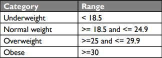

Body Mass Index (BMI) is a measure that calculates your weight in relation to your height. It is usually used to assess body fat percentage and predict potential health risks (Cleveland Clinic, n.d.).
To calculate your Body Mass Index (BMI) using this calculator, input your weight in kilograms and height in meters. After that, press calculate.
Lucas T. Reyes FV 9 - Emerald SY 24-25
Sources: https://my.clevelandclinic.org/health/articles/9464-body-mass-index-bmi https://www.who.int/europe/news-room/fact-sheets/item/a-healthy-lifestyle---who-recommendations